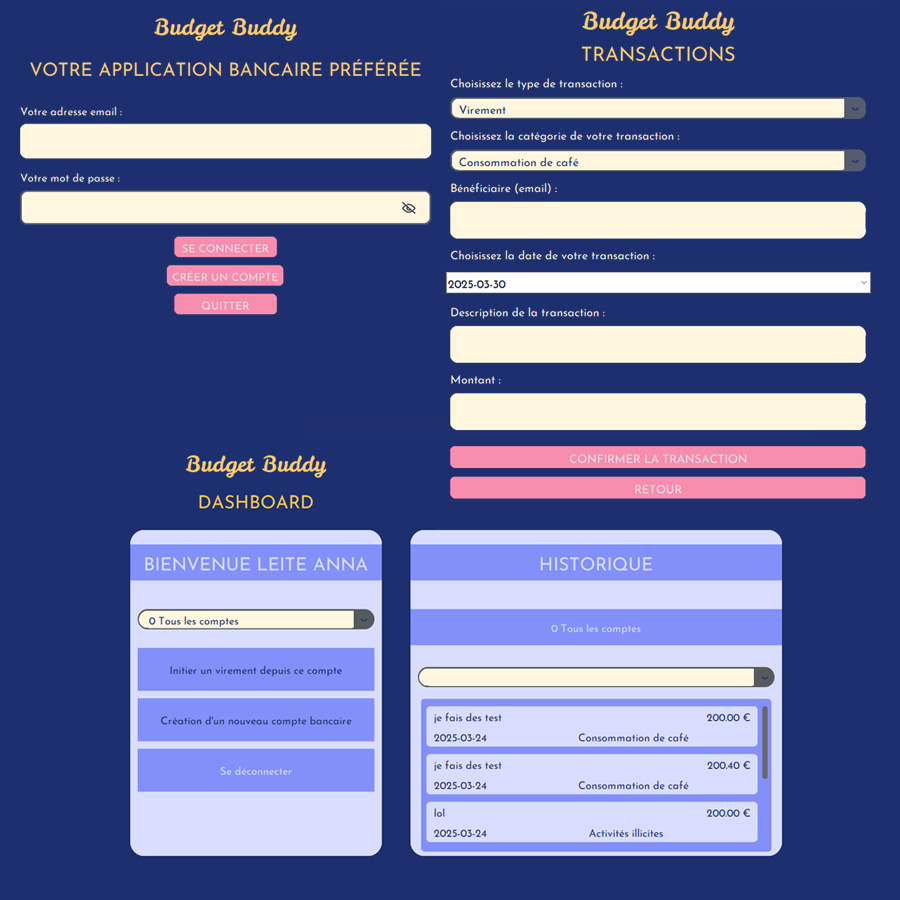
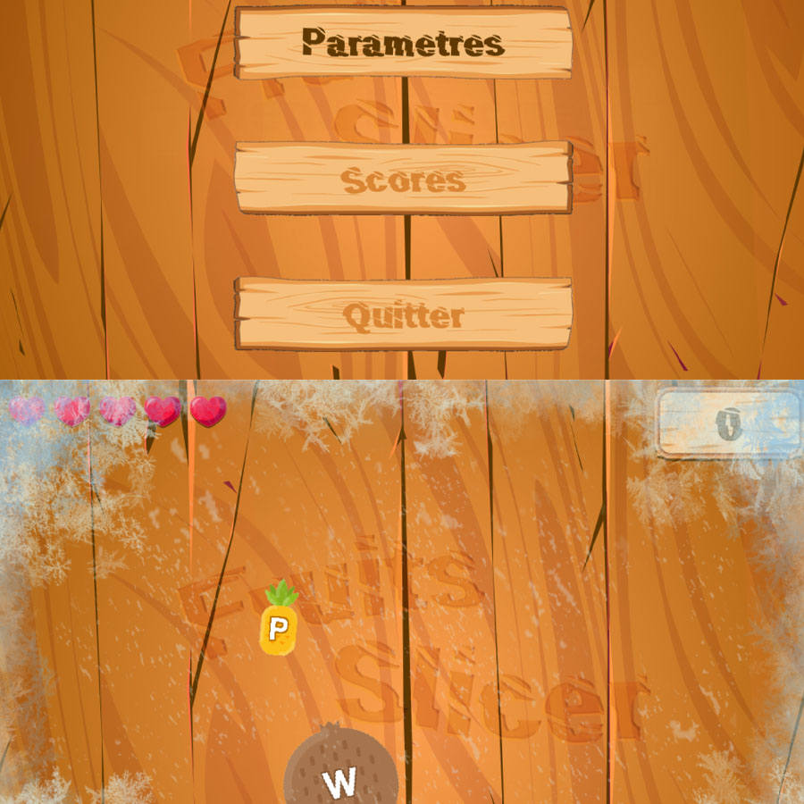

Objectif : utiliser Sass, grid, flex et tout ce qui a été appris
lors de la certification
Le design général a été donné lors du cours, mais l'utilisation et
création des mixin et l'utisation de l'héritage pour les barres de
compétences ont été des rajouts que j'ai trouvé plus intéressant que
le template proposés.
Création d'une application de gestion des élèves d'une école
Base de données PostgreSQL action CRUD possible pour les étudiants
avec filtre en fonction du nom / prénom (LIKE), âge ou note (BETWEEN
: range)
Création de compte administrateur pour les formateurs et équipe
pédagogique avec salage des mots de passe, sel unique pour chaque
compte créé. Regex pour le mot de passe
Utilisation de javafx pour l'interface graphique et de Maven pour
les dépendances du projets
Création d'une application de messagerie type discord avec le
langage C.
Installation et mise en place de l'environnement de développement
sous windows utilisant MSYS2.
Création de socket, deux applications : une pour le serveur et
l'autre pour le client.
Communication entre les deux applications via les sockets en
envoyant les données sous forme de json.
Conception et gestion d'une base de données PostgreSQL avec création
de trigger et de fonction permettant de donner l'accès aux
utilisateurs aux channels publics.
Travail de conception du projet, réalisation : d'un diagramme de
classe, d'une maquette Figma du projet. Répartition des tâches dans
le groupe, intégration et test manuel des nouvelles features.
Réalisation d'un jeu de démineur avec pygame. Utilisation d'un
design system (création des différents composants réutilisables et
modifiable de l'interface graphique)
Programmation orientée objet. Utilisation de la récursivité pour
découvrir en chaîne les cases libres.
POO Design System MVC Algorithmique Python Pygame Scolaire Travail d'équipe Git
Budget Buddy

Réalisation d'un application de gestion bancaire. Utilisation de
SQL, SQL CLI et du connecteur mysql-connector-python.
Travail de conception du projet, réalisation : d'un diagramme de
classe, d'une maquette Figma du projet. Répartition des tâches dans
le groupe, intégration et test manuel des nouvelles features.
Réalisation d'une interface graphique avec Tkinter, projet basé sur
le Model View Controller
Création de compte client et bancaire, regex pour les emails et les
mots de passe, hashage avec sallage des mots de passe avant de les
enregistrer en base de donnée.
MySQL POO MVC Scolaire Python Tkinter Algorithmique Travail d'équipe Git
Pokemon
Réalisation d'un jeu Pokémon en groupe. Créations d'une classe
pokémon héritant d'évolution afin de gérer le gain
d'expérience, de level up et l'évolution.
Utilisation du modèle MVC (Model View Controller) afin de faire
communiquer les classes et fichier back avec les classes et fichiers
front
Sauvegarde des données dans des json (traduction des objets en
dictionnaire) puis instanciation des objets depuis les fichiers json
POO Python Scolaire Pygame Algorithmique Travail d'équipe Git
Fruit Ninja

Réalisation d'un jeu type Fruit Ninja avec python en utilisant
l'interface graphique Pygame. Lorsque la touche du clavier
correspondante a été appuyée, le fruit est coupé.
Création de plusieurs classes (fruits, boutons) et utilisation de
l'héritage (bouton_image hérite de bouton)
Le cours se concentrait sur l'apprentissage du javascript. Le CSS et
HTML a donc été fourni par OpenClassRooms
Utilisation du DOM (Document Object Model), modification du contenu
html selon certaines conditions (au niveau du score), utilisation
d'une regex pour le formulaire.
Participation à un hackaton à la Plateforme_ . Idéation sur un sujet
imposé : l'amélioration de l'utiisation des IoT au sein de notre
centre de formation
Echange des idées au sein d'une équipe de 4 à l'aide du crazy 8
L'idée choisie est une machine à café connectée avec une application
notifiant les utilisateurs si une machine est en panne, à nouveau en
service et quelle quantité de quelle boisson se trouve dans la
machine.
Le problème nous ayant poussé à choisir cette idée plutôt qu'une
autre : les machines à café souvent en panne poussent les élèves à
aller consommer en dehors de l'école, causant une perte de temps et
de la mauvaise humeur lorsque l'utilisateur découvre que toutes les
machines sont en pannes.
Décembre 2024
Idéation Travail d'équipe Scolaire
Portfolio
Réalisation d'un CV et portfolio regrouppant mes projets scolaires
et personnels.
Utilisation du javascript pour la page portfolio afin de créer les
filtres (utilisation de classList). Utilisation du php afin de
n'avoir qu'un fichier pour le header et le modifier dans les 3
pages.
Apprentissage de Sass en cours afin de rendre le CSS plus facile à
maintenir
Réalisation d'un jeu de morpion avec python, création d'un jeu
joueur contre joueur et joueur contre bot
Première version du bot : l'algorithme cherche le premier
emplacement vide disponible (en partant du haut à gauche en allant
vers la droite et en bas) pour y placer son signe.
Deuxième version du bot : l'algorithme liste tous les emplacements
disponibles restants et choisi au hasard un emplacement avec le
module random.
Projet dans le cadre de la formation La Plateforme_ . Apprentissage
des différents composants hardware, utilisation de VMware,
installation de windows 11 et linux.